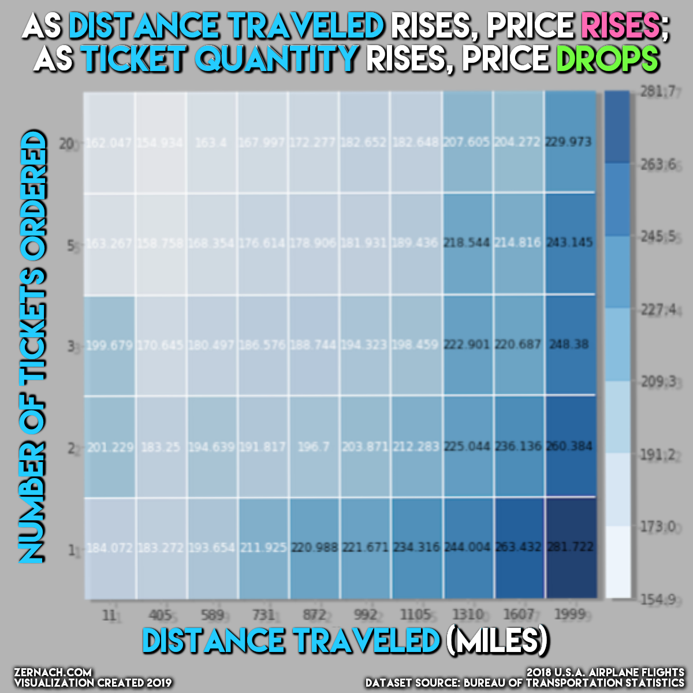

MODELING PROCESS
TABLE OF CONTENTS:
0️⃣ — Data Refining & Cleaning
1️⃣ — Data Distribution Exploration
2️⃣ — Predictive Modeling
3️⃣ — Feature & Permutation Importances
4️⃣ — Partial Dependence Plots
5️⃣ — Individual Instance Shapley Visualizations
0️⃣ — DATA REFINING & CLEANING
To predict airline flight prices, I downloaded a series of datasets from the U.S. Bureau of Transportation Statistics. Although there weren't any NaN values in any of the datasets, there were unnecessary/excess columns for my purposes, so after a few hours of wrangling the data, I was able to slim it down from (27M rows X 42 columns) to (9M rows X 12 columns). After getting the dataset in a position where it was most usable for predicting flight prices, I uploaded it to Kaggle for others to use:
1️⃣ — DATA DISTRIBUTION EXPLORATION
To get a feel for the distribution of data, I used Seaborn library's distplot( ) function on a handful of features:
✅ Price per Ticket: the median price per ticket in this dataset is ~$180, but the average is a bit higher at ~$232 due to the rightward skew of this feature

✅ Number of Tickets Ordered: most people only ordered one ticket, and the more tickets that were ordered, the fewer instances that occurred

✅ Airline Company: there are (12) airline companies in this dataset, but the top (5) most common airline companies in this dataset are Southwest Airlines Co., Delta Air Lines Inc., American Airlines Inc., United Air Lines Inc., and JetBlue Airways
✅ Miles Traveled: it appears that the most common miles traveled value for this dataset is ~1,000. The vast majority of values fall under 2,800 miles, but there are some outliers in the 3,000-5,000+ miles traveled range.

2️⃣ — PREDICTIVE MODELING
To be able to test my model without bias, I used sklearn's train_test_split( ) function twice, which gave me three random samples of the 9M+ instances of data: 35-percent for the training set, 35-percent for the validation set, and 30-percent for the testing set.
For my target variable, I selected PricePerTicket in order to create an artificial ticket ordering web app. PricePerTicket is a continuous variable — therefore, the predictive models that I used were all regression models (as opposed to classification models).
All of the other columns within this dataset are my features that I used for creating a predictive model. I was certain to ensure that none of the other features are "leaking" into the results of the price prediction. In other words, I ensured that none of the variables allowed the model to "time travel". All of the features that contribute to PricePerTicket are variables that can be known before buying a ticket, as opposed to variables known after buying a ticket, which would be data leakage.
After numerically encoding the dataset's categorical features by trying both an Ordinal Encoder and a Target Encoder, I tried several different predictive models: Linear Regressor, Ridge Regressor, and Random Forest Regressor.
For evaluating my models' accuracy, I used the R² Error scoring metric. Every combination of encoders and models beat the mean baseline of zero R² Error, but the one that scored the highest of all of them was pairing an Ordinal Encoder with a Random Forest Regressor model (R² Error = 0.32). The Ridge & Linear Regressors both scored about ~0.175, indicating that they are roughly half as accurate than the Random Forest Regressor for this dataset.
3️⃣ — FEATURE & PERMUTATION IMPORTANCES
To understand which features of this dataset have the most influence on the price per ticket, I pulled the feature importances characteristic from my fitted Random Forest Regression model and plotted them on a graph:

4️⃣ — PARTIAL DEPENDENCE PLOTS
In an effort to more clearly understand how the price per ticket fluctuates based on changes in the other features, I plotted partial dependence plots.


5️⃣ — INDIVIDUAL INSTANCE SHAPLEY VISUALIZATIONS
In my programming notebook, I created a Shapley Force Plots to explain the outcomes of individual instances. Oftentimes, when using decision tree models (in my case, a Random Forest Regressor), it can be difficult to understand how and why the model predicted that specific output without the help of a special library, such as Shapley. I included two examples of Shapley Force Plots below, which have been paired with their respective row from the dataset: